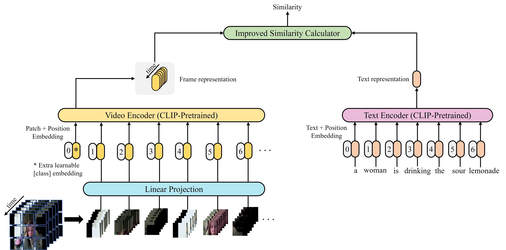
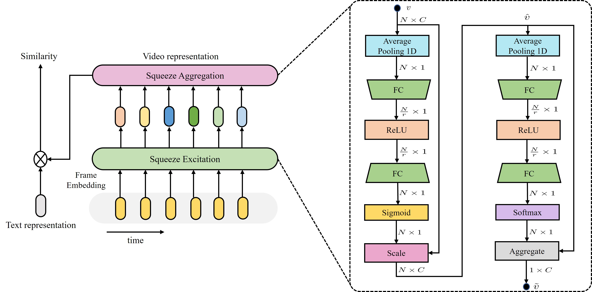
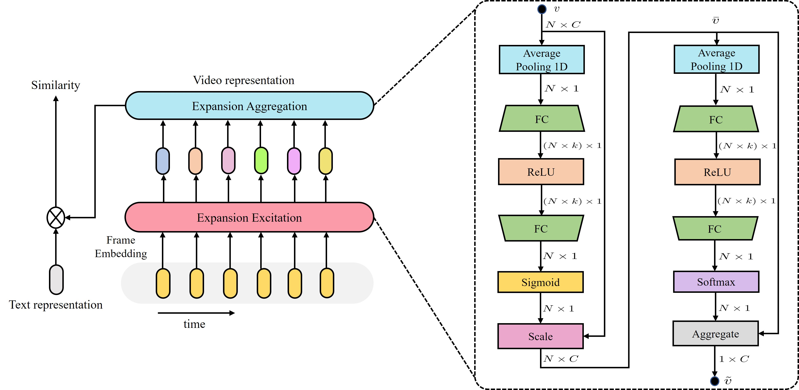
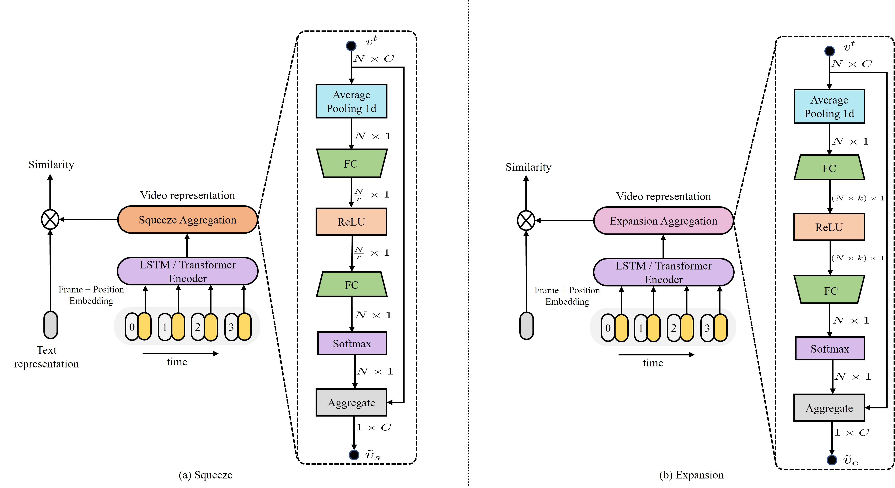
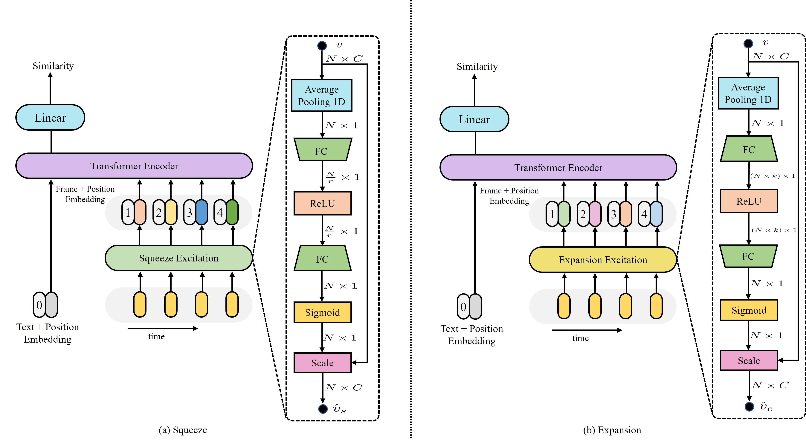

CLIP4Clip model transferred from the CLIP has been the de-factor standard to solve the video clip retrieval task from frame-level input, triggering the surge of CLIP4Clip-based models in the video–text retrieval domain. In this work, we rethink the inherent limitation of widely-used mean pooling operation in the frame features aggregation and investigate the adaptions of excitation and aggregation design for discriminative video representation generation. We present a novel excitation-and-aggregation design, including (1) The excitation module is available for capturing non-mutually-exclusive relationships among frame features and achieving frame-wise features recalibration, and (2) The aggregation module is applied to learn exclusiveness used for frame representations aggregation. Similarly, we employ the cascade of sequential module and aggregation design to generate discriminative video representation in the sequential type. Besides, we adopt the excitation design in the tight type to obtain representative frame features for multi-modal interaction. The proposed modules are evaluated on three benchmark datasets of MSR-VTT, ActivityNet and DiDeMo, achieving MSRVTT (43.9 R@1), ActivityNet (44.1 R@1) and DiDeMo (31.0 R@1). They outperform the CLIP4Clip results by +1.2% (+0.5%), +4.5% (+1.9%) and +9.5% (+2.7%) relative (absolute) improvements, demonstrating the superiority of our proposed excitation and aggregation designs. We hope our work will serve as an alternative for frame representations aggregation and facilitate future research.


Squeeze

Expansion

Squeeze and Expansion

Squeeze and Expansion